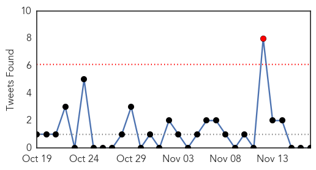
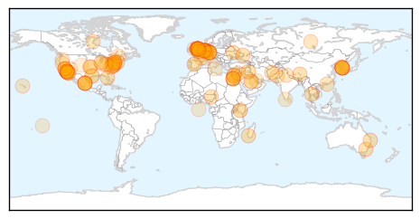

30 Day Trends
Web: 1 alerts, 0 warnings
Twitter: 1 alerts, 0 warnings
Top Articles:
- 0.996
- Egyptian woman dies of bird flu, second death in 2014
- 0.994
- UPDATE 1-Egyptian woman dies of bird flu, second death in 2014-ministry
- 0.978
- Bird flu: What threat to humans?
- 0.978
- Bird flu: What threat to humans?
- 0.973
- Legionnaires' disease outbreak in Portugal
- 0.971
- Bird flu: EU announces emergency measures to contain outbreak in the UK and the Netherlands
- 0.957
- Crown Princess Cruise Makes Emergency Stop in San Pedro After Norovirus Strikes at least 170 Passengers
- 0.948
- Norovirus sickens more than 170 on cruise ship
- 0.941
- Bird Flu Death in Egypt; Outbreak Hits Dutch Farm
- 0.935
- Bird flu making a comeback in Europe - Dumb Out
- 0.930
- Stomach Virus Halts a Cruise
- 0.922
- Separate Circulating Vaccine-Derived Polioviruses Confirmed in South Sudan and Madagascar
- 0.922
- What Worked For China Last Year Could Work For UK, Netherlands
- 0.918
- Bird flu comes to Britain
- 0.917
- Chicago Tribune
- 0.917
- Chicago Tribune
- 0.917
- Chicago Tribune
- 0.917
- Chicago Tribune
- 0.917
- Chicago Tribune
- 0.917
- Chicago Tribune
- 0.917
- Chicago Tribune
- 0.917
- Chicago Tribune
- 0.917
- Chicago Tribune
- 0.917
- Chicago Tribune
- 0.917
- Chicago Tribune
- 0.917
- Chicago Tribune
- 0.917
- Chicago Tribune
- 0.917
- Chicago Tribune
- 0.917
- Bird flu: 'Robust action' on Yorkshire duck farm case
- 0.917
- Bird flu: 'Robust action' on Yorkshire duck farm case
- 0.913
- New Bird Flu Cases Confirmed In The UK And The Netherlands
- 0.910
- The world windows to Thailand
- 0.907
- Norovirus Infects 172 on Cruise Ship, Blamed for Emory Outbreak
- 0.891
- Bird Flu Outbreak Hits Dutch Farm
- 0.891
- Bird Flu Outbreak Hits Dutch Farm
- 0.891
- Bird Flu Outbreak Hits Dutch Farm
- 0.889
- Princess Cruises Outbreak Investigated
- 0.886
- Princess Cruises Ship Forced to Dock after Norovirus Affected 4% of Passengers, Crew
- 0.885
- European Bird Flu Outbreaks Could be Linked, Says WAHO Chief
- 0.873
- Bird flu outbreak: affected farm run by company with premises in China
- 0.866
- Nigeria seeks to extend state of emergency in three northern states
- 0.844
- Syphilis outbreak persists in Columbus
- 0.830
- Egyptian woman dies of bird flu, second this year
- 0.790
- British, Dutch kill poultry to fight bird flu
- 0.790
- Actavis, Allergan are a 'strategic fit'
- 0.786
- Avian Flu Scan for Nov 17, 2014
- 0.785
- INTERVIEW-German, Dutch, UK bird flu outbreaks could be linked -OIE chief
- 0.779
- Zim vice-president hits back at criticism
- 0.772
- 172 people ill with Norovirus on Carnival’s Crown Princess cruise
- 0.748
- Polio outbreak in Ukraine, first cases in Europe since 2010
Showing top 50 articles...
Top Tweets:
-
No tweets found for Nov 17, 2014
Web/News Articles
Tweets
Article Locations
Article Confidences